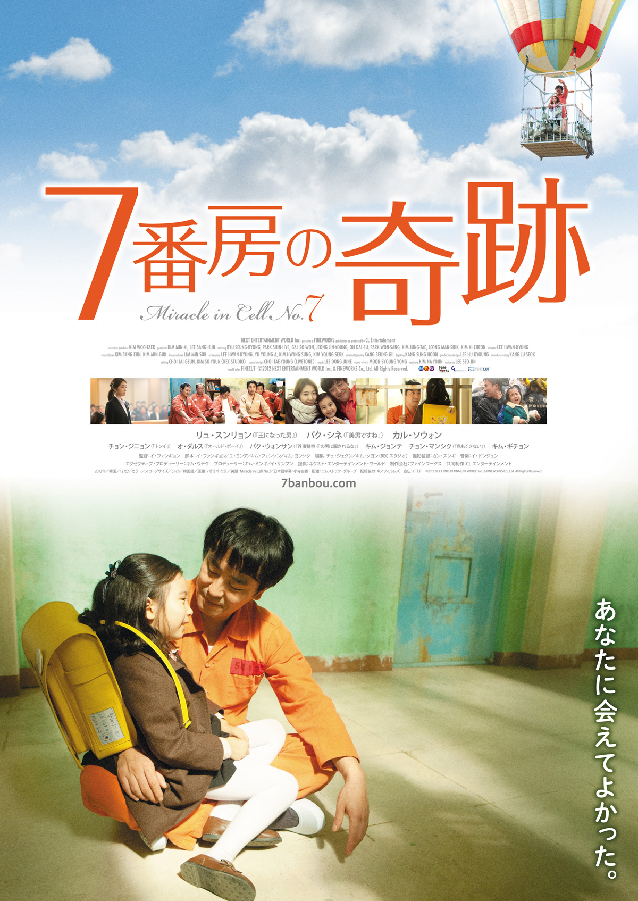

Miracle In Cell No.7
Lee Hwan-kyung
Lee Yong-go is a mentally impaired father with the intellect of a six-year-old, who lives in a run-down house along with his daughter Ye-seung. One day, he gets into a physical altercation with the police commissioner, who has just purchased the last Sailor Moon backpack for his daughter, a gift Yong-go was saving up to buy for Ye-seung. Soon after, the police commissioner's daughter dies in a freak accident, in which she slips on ice and suffers a fatal blow to the back of her head while she is taking Yong-go to another store that sells the same backpack. When he tries to resuscitate her, a woman witnesses him and mistakes him to be molesting her. Yong-go is falsely accused of the abduction, murder, and rape of a minor. The police quickly take advantage of his disability and force him to admit to the crimes, while ignoring exonerating evidence. Yong-go is imprisoned and assigned to Cell No. 7, the harshest cell in a maximum security prison.
The Korean version